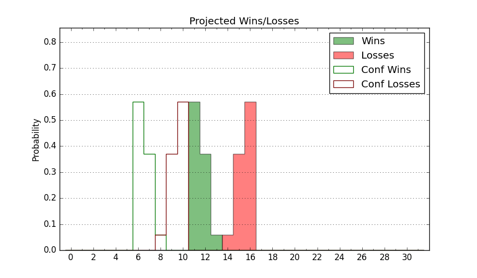

| Home | Game Probabilities | Conferences | Preseason Predictions | Odds Charts | NCAA Tournament |
| City: | Brooklyn Heights, New York | |
| Conference: | Northeast (8th)
| |
| Record: | 6-8 (Conf) 11-14 (Overall) | |
| Ratings: | Comp.: -21.5 (355th) Net: -21.5 (355th) Off: 87.6 (358th) Def: 109.1 (296th) SoR: 0.0 (155th) |
| Remaining | ||||||
|---|---|---|---|---|---|---|
| Date | Opponent | Win Prob | Pred. | |||
| 2/23 | @ Sacred Heart (332) | 23.7% | L 64-72 | |||
| 2/25 | @ Fairleigh Dickinson (338) | 25.2% | L 70-77 | |||
| Previous | Game Score | |||||
| Date | Opponent | Win Prob | Result | Off | Def | Net |
| 11/11 | @Minnesota (213) | 8.7% | L 54-72 | 8.2 | -11.9 | -3.7 |
| 11/13 | @St. Thomas MN (208) | 8.4% | L 48-84 | -19.3 | -10.9 | -30.2 |
| 11/19 | Saint Peter's (320) | 47.4% | W 61-58 | -1.1 | 11.4 | 10.3 |
| 11/23 | @Miami FL (31) | 1.1% | L 56-79 | -2.4 | 13.2 | 10.8 |
| 11/25 | @South Florida (157) | 5.5% | L 60-75 | 3.9 | 3.8 | 7.8 |
| 11/30 | Delaware St. (350) | 62.4% | W 81-73 | 12.5 | -7.5 | 5.0 |
| 12/6 | Hartford (363) | 84.1% | W 68-50 | 0.2 | 8.5 | 8.7 |
| 12/10 | @UMass Lowell (143) | 5.0% | L 59-68 | 7.9 | 8.1 | 16.0 |
| 12/13 | Longwood (154) | 16.2% | L 57-63 | -3.3 | 14.8 | 11.5 |
| 12/17 | @Hartford (363) | 60.9% | W 67-51 | -0.2 | 22.2 | 22.0 |
| 12/31 | @Central Connecticut (341) | 26.8% | L 52-74 | -22.1 | 2.6 | -19.5 |
| 1/5 | Fairleigh Dickinson (338) | 53.5% | L 57-76 | -19.5 | -5.6 | -25.1 |
| 1/7 | @Merrimack (326) | 22.2% | L 53-65 | 4.9 | -10.9 | -6.0 |
| 1/10 | Hartford (363) | 84.1% | W 78-73 | 15.3 | -20.5 | -5.2 |
| 1/14 | Sacred Heart (332) | 51.4% | W 82-79 | 12.0 | -7.0 | 5.0 |
| 1/16 | @LIU Brooklyn (362) | 58.5% | W 73-66 | 10.4 | 1.6 | 12.0 |
| 1/20 | @St. Francis PA (339) | 25.3% | L 61-87 | -6.6 | -20.8 | -27.5 |
| 1/22 | Merrimack (326) | 49.3% | L 55-63 | -4.4 | -7.2 | -11.5 |
| 1/26 | @Wagner (325) | 22.2% | W 65-56 | 20.0 | 10.2 | 30.3 |
| 1/28 | LIU Brooklyn (362) | 82.8% | W 71-59 | -9.8 | 9.8 | -0.0 |
| 2/2 | Central Connecticut (341) | 55.5% | W 53-48 | -14.6 | 19.5 | 4.8 |
| 2/4 | Stonehill (310) | 45.2% | L 59-65 | -0.9 | -7.9 | -8.8 |
| 2/9 | Wagner (325) | 49.3% | W 64-62 | 3.1 | -0.9 | 2.2 |
| 2/11 | @Stonehill (310) | 19.5% | L 51-62 | -7.4 | -4.2 | -11.5 |
| 2/16 | St. Francis PA (339) | 53.6% | L 64-72 | -12.6 | 0.4 | -12.2 |
| Stats & Trends | |||||
|---|---|---|---|---|---|
| Current | Day | Week | Month | Season | |
| Composite | -21.5 | -0.5 | -1.0 | -2.2 | -6.3 |
| Comp Rank | 355 | -2 | -3 | -6 | -19 |
| Net Efficiency | -21.5 | -0.4 | -0.9 | -1.7 | -- |
| Net Rank | 355 | -2 | -3 | -6 | -- |
| Off Efficiency | 87.6 | -0.4 | -0.7 | -1.2 | -- |
| Off Rank | 358 | -1 | -2 | -6 | -- |
| Def Efficiency | 109.1 | -0.0 | -0.2 | -0.5 | -- |
| Def Rank | 296 | +2 | +3 | +7 | -- |
| SoS Rank | 363 | -- | -- | -2 | -- |
| Exp. Wins | 11.5 | -0.6 | -0.8 | -0.4 | +0.5 |
| Exp. Conf Wins | 6.5 | -0.6 | -0.8 | -0.4 | -0.6 |
| Conf Champ Prob | 0.0 | -0.0 | -0.4 | -0.9 | -6.7 |

| Advanced Stats | ||
|---|---|---|
| Stat | Value | Rank |
| Off Eff FG % | 0.425 | 361 |
| Off Ast Ratio | 0.110 | 355 |
| Off ORB% | 0.265 | 197 |
| Off TO Rate | 0.183 | 324 |
| Off FT Ratio | 0.290 | 262 |
| Def Eff FG % | 0.534 | 289 |
| Def Ast Ratio | 0.157 | 284 |
| Def ORB% | 0.329 | 344 |
| Def TO Rate | 0.157 | 172 |
| Def FT Ratio | 0.362 | 287 |